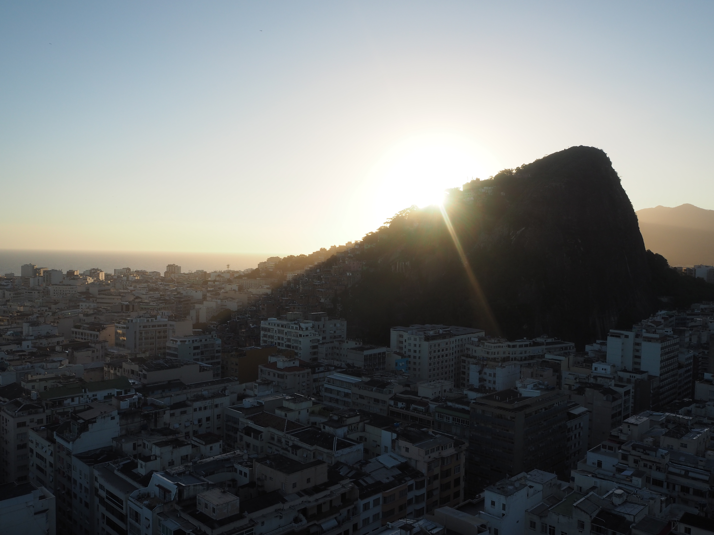
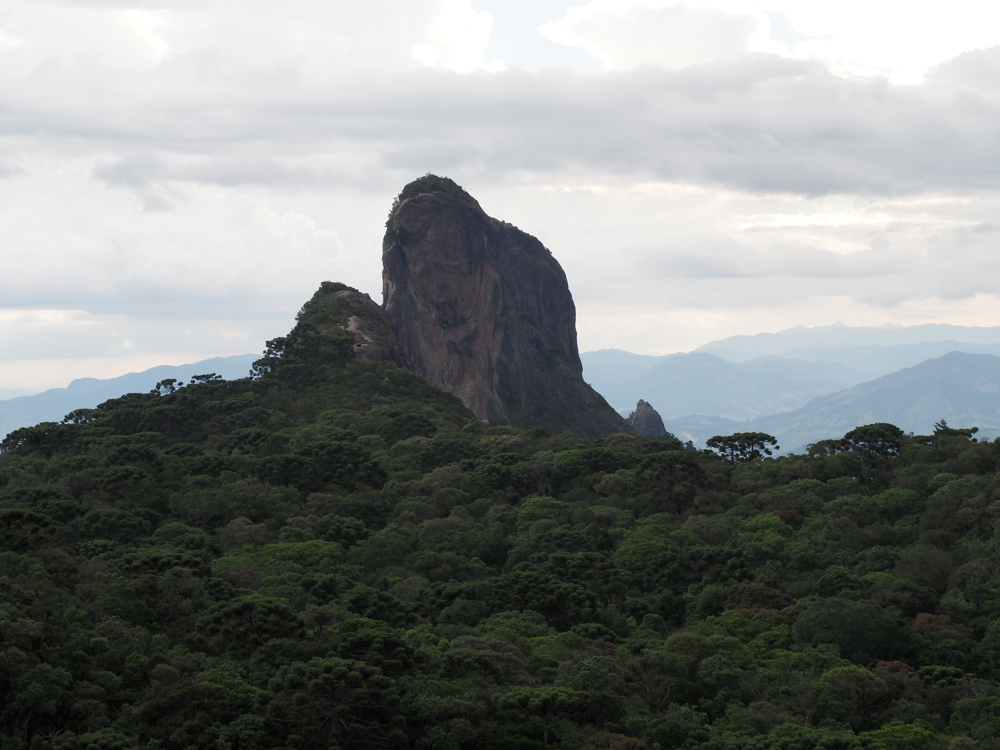

Das kleine Städtchen Santo Antonio do Pinhal ist ein beliebter Naherholungsort für gestresste Paulistanos. Auf einem Plateau das gut 1000 m über dem Meeresspiegel liegt und nur eine Stunde entfernt ist von Sao Paulo, liegt der Ort in den beindruckenden Bergen der Serra da Mantiqueira.
Aufgrund der stürmischen Winde, bietet die Stadt den Besuchern eine perfekte Möglichkeit zur Abkühlung von der überhitzten Millionenstadt.
In idyllischen Landhäusern kann man hier die Ruhe und das Grün der umliegenden Wälder und Wiesen genießen. Das hügelige Land lädt zu kleinen und großen Wanderungen ein, bei denen man immer wieder auf kleine Wasserfälle stoßen kann. Diese bezaubernden Naturereignisse fordern den Besucher immer wieder auf, das grüne Umland zu erkunden.
Nur Dreissig Kilometer entfernt von Santo Antonio befindet sich Campos do Jardao, die am höchsten gelegene Stadt Brasiliens. Bekannt ist sie für ihre im schweizer Stil gehaltenen Fachwerkhäuser und die deutsche bzw. schweizerische Küche, welche zum Beispiel im Brauereilokal "Baden Baden" angeboten wird.
Mit dem 1.950 Meter hohe Granitfelsen "Pedra do Baú" und dem dazugeörigem Nationalpark besitzt die Campos do Jardao ein weiteres lohnenswertes Ausflugsziel. Als Tourist, gestresst von der stressigen Millionenstadt Sao Paulo, kann man also bequem mit einem Busfahrticket innerhalb weniger Stunden ins Grüne verreisen.